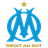

P
A
R
İ
S
S
A
İ
N
T
Paris Saint Tarihçesi
Paris Saint-Germain Football Club veya genel olarak bilinen ismiyle Paris Saint-Germain (Fransızca telaffuz: [paʁi sɛ̃ ʒɛʁmɛ̃]) ya da kısaca PSG (Fransızca telaffuz: [peɛsʒe]), 1970 yılında Fransa'nın Paris şehrinde kurulan spor kulübüdür. Fransa'nın en üst ligi olan Ligue 1'de yer alır. Kendi sahası olarak kullandığı stadyum Prensler Parkı'dır.
KADRO
- Keylor Navas
- Presnel Kimpembe
- Sergio Ramos
- Juan Bernat
- Achraf Hakimi
- Marco Verratti
- Fabián Ruiz
- Pablo Sarabia
- Lionel Messi
- Neymar
- Kylian Mbappé
M
A
R
S
İ
L
Y
A
Marsilya Tarihçesi
Marsilya,Fransa'nın en eski şehridir. Yaklaşık 2,600 yıl önce Foçalı Grekler tarafından kurulmuştur. Güney Avrupa ve Kuzey Afrika arasında bir geçit olması farklı kültürleri ve ırkları bir araya getirmiştir. Günümüzde kentin en büyük gelir kaynağı limanlarıdır.
- Pau López 
- TEric Bailly
- Duje Caleta-Car
- Sead Kolasinac
- Nuno Tavares
- Mattéo Guendouzi
- Chancel Mbemba
- Gerson
- Cengiz Ünder
- Alexis Sánchez
- Luis Suárez
KADRO
R
E
N
N
E
S
S
Rennes Tarihçesi
Liverpool kulübü, John Houlding ile Everton arasında yaşanan ihtilafın bir sonucu olarak kurulmuştur. 8 yılın ardırdan Everton kulübü, 1892 yılında Goodison Park'a taşınmış ve buna takriben Houlding, Liverpool kulübünün temellerini atmıştır. İlk başta "Everton FC Athletic Grounds Ltd.
-
Dogan Alemdar

-
Arthur Theate
-
Adrien Truffert
- Joe Rodon
-
Hamari Traoré
-
Loic Bade
-
Flavien Tait
-
Lovro Majer
-
Amine Gouiri
-
Jérémy Doku
-
Martin Terrier